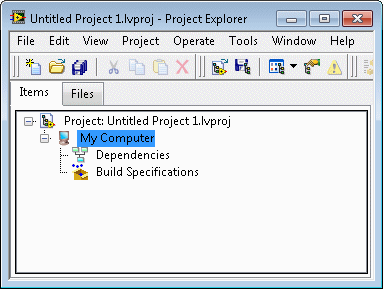

Projects in LabVIEW consist of VIs, files necessary for those VIs to run properly, and supplemental files such as documentation or related links. Use the Project Explorer window to manage projects in LabVIEW. In the Project Explorer window, you can use folders and libraries to group together items, and you can use a list of VI hierarchies called Dependencies to keep track of items a VI depends on.
Using the Project Explorer Window
Use the Project Explorer window to edit projects. To display the Project Explorer window, create a new project. You also can select File�Open Project to open an existing project.
The Project Explorer window, shown as follows, includes two pages, the Items page and the Files page.

The Items page displays the project items as they exist in the project tree. The Files page displays the project items that have a corresponding file on disk. You can organize filenames and folders on this page. Project operations on the Files page both reflect and update the contents on disk. You can switch from one page to the other by right-clicking a folder or item under a target and selecting Show in Items View or Show in Files View from the shortcut menu.
The Project Explorer window includes the following items by default:
Project root�Contains all other items in the Project Explorer window. This label on the project root includes the filename for the project.
My Computer�Represents the local computer as a target in the project.
Dependencies�Includes items that VIs under a target require, such as other VIs, shared libraries, and LabVIEW project libraries.
Build Specifications�Includes build configurations for source distributions and other types of builds available in LabVIEW toolkits and modules. If you have the LabVIEW Professional Development System or Application Builder installed, you can use Build Specifications to configure the following:
Stand-alone applications
Installers
.NET interop assemblies
Packed libraries
Shared libraries
Source distributions
Web services
Zip files
You can hide the Dependencies and Build Specifications items in the Project Explorer window. If you hide either item you must display it again to access the item; for example, to build an application or shared library.
When you add another target to the project, LabVIEW creates an additional item in the Project Explorer window to represent the target. Each target also includes Dependencies and Build Specifications. You can add files under each target.
You can place a VI from the Project Explorer window on the block diagram of another open VI. Select the VI you want to use as a subVI from the Project Explorer window, and drag it to the block diagram of the other VI.
You also can use the Project properties and methods to configure and modify projects and the Project Explorer window programmatically.
Organizing Items in a Project
The following list describes some of the caveats and recommendations to consider when you organize items in a project:
You can use a sort option to sort items within a project. Sort options apply automatically to items within the project and do not alter the organization of a project on disk. Use sort options to better organize and manage items within a project.
Create a separate directory of files for each project you create. Organizing project files into separate directories makes it easier to identify files related to specific projects on disk.
Directories on disk do not match the project structure of virtual folders. After you add a directory on disk to a project in a virtual folder, LabVIEW does not update the folder in the project if you make changes to the directory on disk. Add a directory on disk to the project in an auto-populated folder to monitor and update changes on disk in the project.
(Windows) If you are building an installer, make sure you save the files that are in a project on the same drive as the project file lvproj. If some files are on a different drive, such as a network drive, links can break if you include the project in an installer.
The structure of files in a source distribution does not have to match the structure in the Project Explorer window. You can specify a different structure when you build a source distribution.
Dependencies updates automatically when you add, remove, or save an item in the project. You cannot directly add files to or remove files from Dependencies. LabVIEW automatically tracks the hierarchy of every item you include in the project to ensure Dependencies includes files on which the item depends.
When you open a project, the items that a VI calls dynamically do not appear under Dependencies. When you run the callers, the dynamically loaded items appear in the Items in Memory folder under Dependencies. You can add these items manually under a target to manage them in a project.
When you build an application, you can apply settings to an entire folder. Consider grouping all dynamic items in a folder under the target.
The project can contain conflicts when two or more items with the same qualified name from different paths exist in the project. A yellow warning triangle appears on any conflicting items. Click the Resolve Conflicts button to open the Resolve Project Conflicts dialog box, in which you can view a summary of the project conflicts and resolve the project conflicts.
Loading Project Items into Memory
When you open a project, LabVIEW searches the locations of project items on disk to populate the project tree. LabVIEW then loads the following libraries, including the libraries under Dependencies, into memory:
When loading libraries, LabVIEW loads the members of a library into memory as follows.
Library File
Load Member VIs?
Load Member Type Definitions?
Load Member Libraries?
Project library (.lvlib)
No
Only the type definitions that the shared variables in the project library use
Yes
Packed project library (.lvlibp)
Yes
Yes
Yes
Note��When loading the member libraries, LabVIEW loads all the member VIs of the member libraries.
Class library (.lvclass)
Yes
Yes
Yes
XControls library (.xctl)
Only ability VIs, property VIs, and method VIs
Only Data and State type definitions
Yes
Statechart library (.lvsc)
No
No
Yes
Use the VI Hierarchy window to view VIs in memory. If a library loads a VI or type definition into memory, the library also loads the entire VI hierarchy, which may include VIs that are otherwise not loaded.